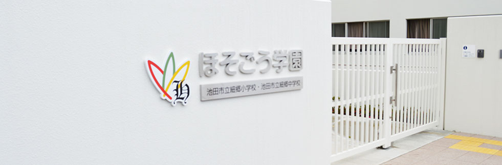

ほそごう学園
池田市立細郷小学校・中学校
Hosogo Primary school&Junior high school
サイトマップ
お問い合わせ
ホーム
学園案内
学園生活
施設設備
教育研究
地域連携

いじめ防止基本方針
ほそごう日誌
緊急時のたより
新着情報
2017/10/31
ほそごうだより１１月号をアップしました。
2017/10/27
今年度の公開授業研究会１次案内をアップしました。
2017/09/29
ほそごうだより１０月号をアップしました。
2017/09/11
学校運営協議会予定と傍聴要領をアップしました。
2017/09/01
ほそごうだより９月号をアップしました。
2017/07/19
ほそごうだより夏休み号をアップしました。
もっと見る
活動レポート
フレンドリーコンサート
公開授業研究会のお知らせ